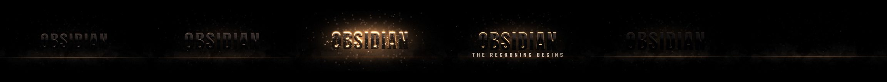

T01 Obsidian Impact
A - Dark, Powerful Mass Elevation · 8.0s · 2.5D
Monumental black-glass lettering emerges from total darkness and is carved out by a hard backlight.
Design, controls & limitations

- Entrance
- Deep forward travel from far depth while the title is still unlit (silhouette emergence).
- Impact / reveal
- At the impact frame a sharp warm backlight ignites the letter edges; restrained dust burst and shards.
- Camera
- Slow continuous push-in, short decaying impact shake.
- Material
- Obsidian black glass with conchoidal bump, dark-steel bevel, warm rim light; 2.5D extrusion stack.
- Exit
- Edge light drains away, then the title sinks back into darkness.
- Timing
- impact frame 84, hold 84–150, exit 150–186 (192 frames)
- Fusion controls (39)
- Animation Start (frames), Reveal Duration (frames), Impact Frame, Exit Start (frame), Exit Duration (frames), Background Intensity, Particle Intensity, Glow Strength, Impact Intensity, Camera Shake, Text Scale, Text Position X, Text Position Y, Text Rotation, Extrusion Depth, Letterbox (2.39:1), Accent Color, Main Title, Main Title Font, Main Title Style, Main Title Size, Main Title Letter Spacing, Main Title Line Spacing, Main Title Alignment, Main Title Color, Subtitle, Subtitle Font, Subtitle Style, Subtitle Size, Subtitle Letter Spacing, Subtitle Line Spacing, Subtitle Alignment, Subtitle Color
- Unconfirmed Fusion inputs
- 7 — check in Resolve (listed in README)
- Fusion source parses (Lua)
- Graph structure checks
- Preview media checks
- Resolve: blocked (not tested)